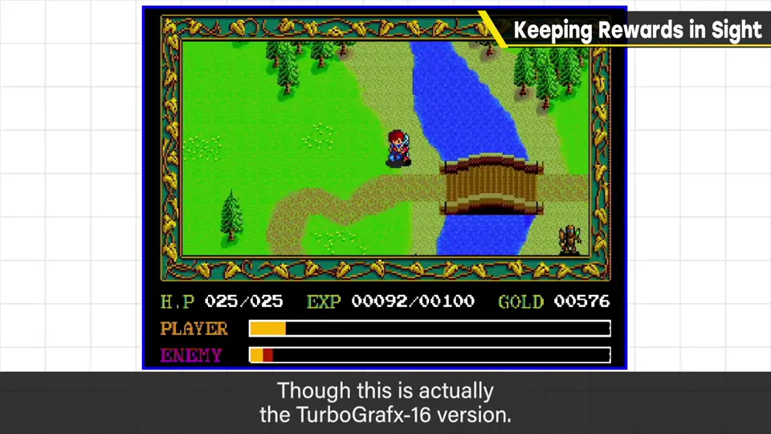
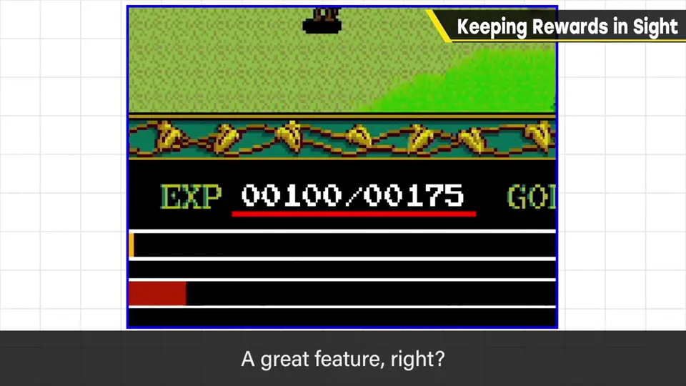
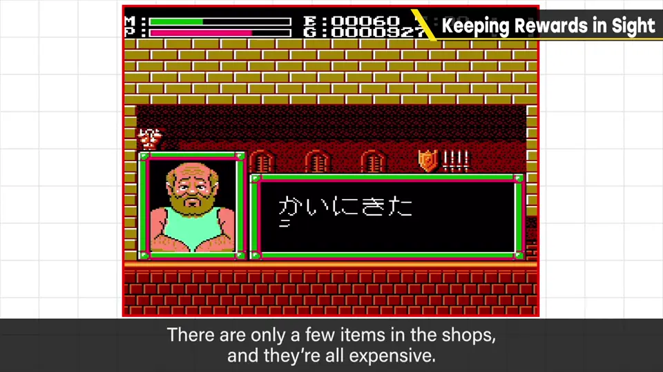
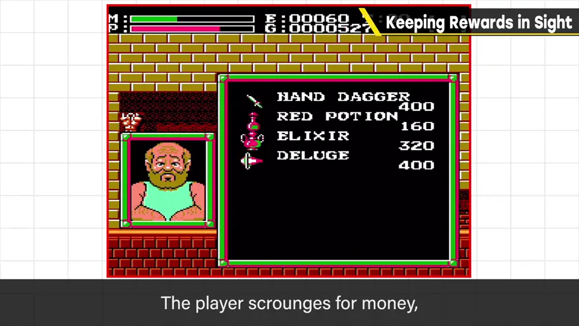

速览
回报和奖励当然能成为让人忍不住推进游戏的动机；但在游戏途中意识不到回报也有点可惜。看《伊苏》（原为 1987 年 PC 游戏，这里是 PC Engine 版画面）：主画面偏小，大概是当时绘制很花时间、为节省处理负荷而缩小，所以画面外有余地、能放更多信息。注意下方：显示着当前经验值和升级所需数值——非常好。每打倒一个敌人数值就增加，所以会忍不住努力到升下一级为止：收益与目标被明示了。把回报吊在眼前、让目标清楚，能增加干劲。同样与日本 Falcom 相关的《Faxanadu》：商店里卖的道具少、价格偏高，但买到时会大幅强化；一点点攒小钱、想着「还差多少就能换下一件装备」而努力，对游戏是加分。现代游戏钱比较充裕、装备成堆，这种乐趣也许难做；但把目的意识放在伸手可及的位置、把达成时的喜悦直接传达出来，非常值得参考。樱井说他现在才想到：自己的游戏如果更积极地引入就好了。
1. 《伊苏》：经验值一直看得见 0:04
回报和奖励当然是让人推进游戏的动机；但如果在游戏途中意识不到回报，就有点可惜。
这是《伊苏》（Ys，原为 1987 年的 PC 游戏，画面为 PC Engine 版）。主画面偏小，大概是当时绘制很花时间、为节省处理负荷而缩小，所以画面外有余地、能放更多信息。


注意下方：当前经验值和升级所需数值一直显示着——非常好。每打倒一个敌人数值就增加，所以会忍不住努力到升下一级为止。收益和目标都被明示了。
2. 《Faxanadu》：一点点攒钱 1:15
同样与日本 Falcom 有关的《Faxanadu》：商店里卖的道具少、价格偏高，但一旦买到会大幅强化。一点点攒小钱，想着「还差多少就能换下一件装备」而努力，对游戏是加分。


3. 放在伸手可及处 1:39
现代游戏钱比较充裕、装备成堆是常态，这种乐趣也许难以做出。
樱井说，现在回想，自己的游戏也应该更积极地引入这一点。
自测题
1. 《伊苏》在画面上显示经验值为什么好？
显示当前经验值和升级所需数值，每打倒一个敌人数值就增加，收益和目标被明示，会忍不住努力到升下一级。 0:49
2. 《Faxanadu》的商店设计带来了什么乐趣？
道具少、价格高，但买到能大幅强化；一点点攒钱、想着还差多少就能买下一件装备而努力。 1:15
3. 本期的核心启示是什么？
把回报吊在眼前、把目标放在伸手可及处，并把达成的喜悦直接传达给玩家。 1:48